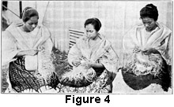

1922—Millinery
by Charlotte Rankin Aiken, B.A.
Chapter IV—STRAW HAT-MAKING
Hand-Made Hats
Until the last few centuries or until hat-making machinery was invented, all straw hats and braids were made by hand. Today they are made by hand only where labor is cheap, as in Japan, China, Italy, the Philippines, and Central and South America. The best examples come from Panama and the surrounding country, and from Japan, China, and the Philippines. The word "straw" is used here in its broadest meaning, as most people use it to include all hats made of straw, chip, grasses, palms, etc. Hats made in one piece are called "body" hats.
Body hats are made entirely by hand. They are easily recognized, for a machine will plait only a straight braid and cannot weave circularly from the apex of the crown to the edge of the brim.
Figure 4 shows natives weaving hats by hand.
Panama Hats
The Panama hat is deservedly popular. It never goes entirely out of style. Its strength, lightness, flexibility, clear cream-white color, and comfortable fit recommend it highly to customers. It can stand very hard wear, though it needs the same care as any other vegetable fiber. Usually the trimming is simple, a ribbon or scarf making it appropriate for wear as a sport hat.
Panama hats may be classified as genuine, and imitation:
- Genuine Panama
- Japanese Imitations
- Adamba
- Toyo
- Formosa
Location of Industry
While few Panama hats are made in Panama, it is a distributing center for them, which accounts for the name. Central and South American countries produce many, especially Colombia, Venezuela, and Guiana. The high-grade hats come largely from Ecuador and Peru. There has been a great increase in their use in late years. For centuries the industry was carried on by the Indians of Central America. Now it is the chief occupation of remote settlements.
In the countries where it is made the Panama hat is called jipi-japa, the name of a city concerned in the trade.
Gathering the Raw Material
The natives gather the leaves of the Panama hat palm, which is a screw palm growing wild in large quantities on low-lying wet land. Only the young, tender, unspread fan-shaped leaves are used. Care is taken not to injure the growing center of the palm, from which other crops may be obtained.
When the young, stiff, perfect leaves are secured, they are dampened, split into shreds with the fingers, or rarely with instruments, and the veins and the ribs of the plant are removed. The strips are not fully separated but are left at the base of the leaf. These shredded leaves are called "cogollo" in the trade.
Toughening and Bleaching
Large earthenware jars about four feet deep are filled with water, to which the juice of five or six lemons is added. In these jars the leaves are soaked from six to ten days. This makes them pliable and removes the sap and resin. Sometimes the leaves are steeped in boiling water. They are then bleached in the sun for three or four days, or until they become a cream white. Panama hats which are bleached by this natural method—the best one—are never of a pure or dead white. The sorted strips are then made up and sold in bunches weighing two pounds.
Plaiting by the Natives
The hats are made in the villages by families or by groups of acquaintances who gather for the purpose. There are all grades of skill. The children use the poorer straw and each child can make two of the coarser hats in one day. A few of the adults who have gained a reputation as the most expert weavers of the village make the very fine hats that require several months of labor and great skill. These were formerly sold in Europe or in South America for about $150. A hat of this kind can be folded into the size of a watch-case. Most of the hats which are sold in America for $5 to $10 take two or three days in making.
Process of Making
A wooden block of the required shape is placed between or on the knees of the worker. The plaiting starts from the top of the crown, going around in circular form. There are a number of different methods of weaving. The weavers' sense of touch is very delicate and their sight is good. They are careful not to break the strands, and must have great patience. Moisture keeps the material flexible, therefore the part of the hat that is being worked upon is kept wet. Only rarely the hat is woven under water, as has sometimes been said. The plaiter of the Panama hat works from five to seven hours a day, in the morning and evening or at night, when the atmosphere is moist. If the hat is woven in the middle of the day, when it is hot and dry, the straw becomes brittle and breaks easily; the result is an inferior hat. The rainy season is the best for weaving.
Finishing
After a hat has been woven in a single piece and the edge finished, it is washed and again put on the block, where it is beaten with a wooden hammer and ironed carefully to make it smooth. It is then finished and ready for shipping. To prevent moulding, dry, powdered sulphur is sprinkled between the hats in packing. They are easily sold, Cuba and Central America being good markets. When the hats are received here, manufacturers usually bleach, reblock, and finish them.
Method of Cleaning
It is often well to tell a customer facts about the care of a hat, especially the Panama. The bleaching of hats with oxalic acid which is customary in this country to make them pure white, is the worst possible treatment for them. Such bleaching agents cause the fiber to deteriorate and greatly impair its durability. When soiled the hat should be washed with a pure soap and warm water. Some soaps are injurious, but white soap is good. To restore the shape it may be dried on a block or stuffed with stiff paper. Lime, lemon juice, and sulphur assist the natural bleaching by the sun.
Tests for Quality
To prove that a Panama is of good quality, hold it up to the light to see if there are any knots or patched places. Sometimes strands have been broken in the making and additional ones woven in. This spoils the texture. It is not apparent at first, but after being worn the ends are apt to fray out. It is hard to tell split straw, which is much inferior to unsplit straw, as it is woven with such skill that only keen observation will detect it.
Another test of quality is the lack of artificial stiffening. The straw is stiff enough naturally. Hats of rather ordinary grade are sized with a thin gum and polished slightly. This is done as a separate business in the countries that ship the Panamas, and sometimes by manufacturers here.
Imitation Panamas
Japan has imitated the appearance and weave of the Panama hat. Among these imitations three kinds, named for the provinces where they are produced, are generally sold today. The finest is the Adamba Panama, which retails for $2.50 to $10.
The Toyo is next in quality, selling from $1.50 to $6. It was introduced into the United States in 1914 and has steadily increased in popularity. The raw material is a sort of tough, thin, fibrous paper, folded or crushed from about a half inch in width to the width of the straw. This Panama will not crack when bent nor be spoiled by dirt or water, as cleaning and reblocking restore it to its former condition.
The least expensive, the Formosa, sells from $1 to $5 and may be distinguished by faint spots that mar the pure white quality. It is also made of paper.
Wenchow
A Chinese body hat, called the Wenchow, is made from a strong, stiff grass, with an over-and-under weave, which in cloth making is called a simple or tabby weave. It resembles close square mesh netting. Like the Panama it is plaited by hand, in one piece. It may be embroidered easily and effectively with colored yarns, and may be dyed any color.
Philippine Hats
In the Philippine Islands many varieties of hats are made by hand, some of one piece and some of sewn braid.
The most important varieties of these hats are as follows:
- Bamboo
- Buri
- Kalasio
- Buntal
- Pandan
In certain sections of the islands the natives formerly worked upon material which was rare in their neighborhood, while they neglected an abundance of other material that was close at hand, but the United States Government is now teaching them better methods.
The raw material is obtained mostly from bamboo and various palms. As in other countries, the time of day when the weaving is done is an important consideration, for during the heat of the day the straw will become brittle and crack. In one section weaving is done in shallow wells, where the weaver sits upon a low platform.
Two weaves are used. The "close" weave is adaptable to straws which are apt to crack if bent. This method, however, produces greater stiffness than the other method, which is simply an "open" or "over-and-under" weave, like a darn or the weave of burlap.
Bamboo Hats
Many bamboo hats are worn in the United States by both men and women. Some are known as Java or Manila hats. The raw material goes through many processes which, although simple, take considerable time before the perfect, even straw is obtained.
In the fall the bamboo is gathered and the tall stalks are dried in the shade for several days. From ten to twenty of the middle sections of each stalk are then cut at the joints or nodes. The sections at the bottom where the nodes are nearer together, produce short straw and those at the top yield weak material.
The sections chosen are split from the center into several pieces lengthwise, and each piece is scraped on the inside, for the inner material is too weak and coarse to be used. The pieces thus obtained are about one-eighth of the original thickness, and they are split into five or six thin layers, not counting the green outer skin which is discarded. The layers next to the outer skin are the darkest, finest, and strongest. All are boiled in water for half an hour to toughen and partly bleach them, and are then bleached in the sun. The women sort them and they are sold in bundles in the markets or directly to the weavers.
Weaving Bamboo
The weavers, who are mostly women, finish preparing the straw. First, layers of bamboo of the same quality are chosen and split into narrow strips with an awl. By making a fringe of straws at one end of the piece of bamboo and running the awl over and under these, the awl splits the whole into straw when the piece is pulled. These straws are somewhat uneven in width and thickness and hence must be shaved off in a simple machine which is made by the weaver. Weaving is easy because the straw is flexible. If water is used to keep the straw soft, the hat becomes yellow.
The close weave has to be used with bamboo and helps give it stiffness. The women become so expert with their fingers that they can almost weave in their sleep. The length of time consumed in making the various grades of bamboo hats corresponds to that spent on Panamas, several hours for the coarsest and several months for the finest.
Double Hats
Most bamboo hats are made double to give sufficient strength and stiffness. The outer hat is finer than the inner one. Finishing the brim by joining the edges is expert work and is generally done by special workers. The under brim is trimmed somewhat smaller than the outer, and the straws of the outer hat are turned back and under and woven into the edge of the under brim. Examination of a bamboo hat will show how difficult this work must be.
The outer hat is sometimes dyed a different color from the under one, which may be left the natural cream color. Dyes and bleaches act very easily upon bamboo straw. The last operation in manufacturing a bamboo hat is to trim the projecting straws and to polish it to a finer luster by means of some smooth hard surface, such as that of a bottle.
Qualities of the Bamboo Hat
Sizing is needed to furnish stiffness enough to keep the shape, as the bamboo is so light and flexible a straw.
Bamboo hats are strong but are not so long-lived as most Philippine hats, although probably more of them than of other kinds are now exported. The holes made by hatpins show in a bamboo hat and damage it, though this may be concealed by the trimming or by using other methods of fastening. A fashionable way of trimming, during one season, was by painting upon the surface of the hat, birds, vines, flowers, or other decorations. Dolls' hats are often made of bamboo.
Buri Hats
From the buri palm three distinct varieties of hats are made. The first, called buri hats, are made from the blades of the unopened leaf. These hats are coarse and not very durable. They are suitable only for outing hats and are sold cheaply at summer resorts and the seaside. As they are naturally stiff, because the straw is rather broad and tough, they are not sized. Neither, usually, are they blocked or trimmed, but are bleached white. Children's hats of buri are made very attractive by weaving in a few colored straws. The open weave is used. Buri is easily dyed, though the aniline dyes now used fade more rapidly than the vegetable dyes which they have displaced.
Kalasio Hats
Another variety made from the buri palm is the Kalasio hat, named for one of the towns where it is made. These hats are made from the midrib of the unopened leaf. The material is stronger than bamboo and does not crack when bent. When brought from the Philippines it is rather costly. Other countries, Mexico, for instance, make a similar hat more cheaply.
The structure resembles that of the bamboo hat—a double hat skilfully joined at the edge. Either weave may be used or both of them together, with a band of the open weave around the brim of a closely woven hat. A dull finish is given by dusting the hat with sulphur.
Buntal Hats
The third kind of hat made from the buri palm is the buntal hat, which is called in the United States "East Indian Panama," or "Italian straw." The stem of the opened leaf of the palm is used. The method of manufacture is very similar to those previously described. The natives divide the labor of preparing, plaiting, and finishing. Since the straw is naturally stiff, it can be made too stiff with sizing, which is a defect. Buntal hats are strong, light, and look more silky in texture than a Panama. They are quite popular, especially for men's summer hats. The whiteness is not retained long, but if they are bleached when cleaned they look as good as new. The finish is obtained by ironing. Buntal hats in the close weave are the finest produced in the Philippines and are rather costly.
Pandan Hats
Pandan hats are strong and last well. They have a natural gray or brown color, and are of wide straw giving a coarse appearance. Madagascar supplies these hats at a low price. The color is so attractive naturally that they are not often bleached.
Minor Hat Materials
Among the minor materials from which hats are made in the Philippines are a black fern stem, the interior of the vegetable sponge, rice straw, grass, the cattail, and other plants. An unusual hat is made of rattan. It is double, with a velvety, dark smooth straw of slightly uneven color running through the weave. Durable and beautiful though they are, the expense of their manufacture prevents the wide use of rattan hats.
Export Trade
Since there has been free trade between the United States and the Philippines, the export trade in hats has greatly increased. With this advantage, together with the excellent work of the schools, which are improving and spreading the industry, we may expect to see still greater use of the different varieties of hats from these islands. Bamboo and buntal hats bring the most money to the islands, although many inexpensive buri hats are exported. If the special name is unknown or not used, the hats are called simply "Philippine hats," but the salesperson will be able to pick them out from the preceding description and from the pictures.